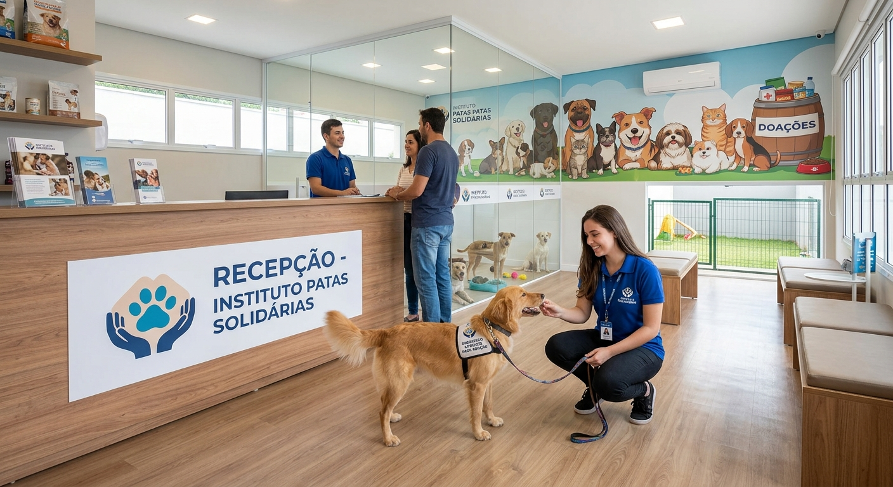

Nossos Projetos

Adoção
Adoção Responsável
Projeto que conecta animais resgatados a famílias dispostas a oferecer um lar definitivo,com acompanhamento pós adoção.
Saúde
Castração Solidária
Mutirão de Castração gratuita para controlar a população de animais em situação de rua.
Resgate
Resgate e Reabilitação
Atendimento veterinário e recuperação de animais feridos ou doentes encontrados nas ruas.
Como Ser Voluntário
Voluntários auxiliam em resgates, cuidados diários com os animais e eventos de adoção.
Campanhas de Doação
As doações financeiras sustentam a alimentação, tratamentos veterinários e manutenção do abrigo. Também aceitamos doação de ração, cobertores e materiais de limpeza. Cada contribuição é revertida diretamente para cuidado dos animais resgatados.